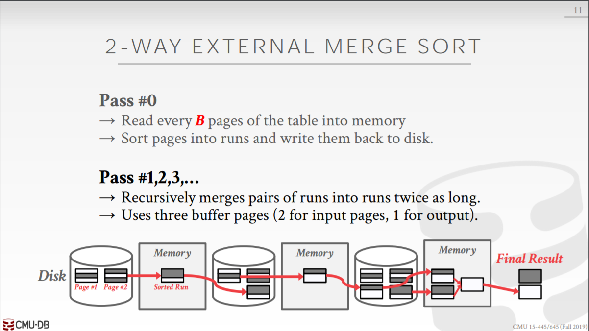

[CMU15445]:排序与聚合
sorting
排序在数据库中发挥着重要作用，首先SQL会指明对输出进行排序(DESC…), 有些关系运算，比如连接运算，如果对输入关系进行排序，那么会得到更高效的实现
算法的选择
如果所有的数据都能够放入内存当中，那么当然是复杂度越低的排序算法越好，但是如果数据并不能够一次性全部放入内存，那么就需要考虑磁盘I/O, 如复杂度最低的快排，此时就需要进行大量的随机I/O, ,时间反而消耗比较高
External Merge Sort
对于不能够全部放入内存中进行的排序称之为外排序(external sorting), 而最常用的外排序算法就是归并排序
归并算法将表中的数据分为多个归并段，一次性将部分归并段放入内存当中进行排序，当排序完成之后将他们写回磁盘再进行下一批次的
排序，最终可以得到多个有序的归并段(runs), 再递归地对归并段进行排序就能得到最终的排序结果
二路归并

buffer page问题
在
Pass #0中，内存中的所有page都被使用到，假设内存大小为B个page, 总共有N个page, 那么在pass #0中就会得到$lceil B/N rceil$个run在Pass #1, 2, 3…中，在内存只使用3个page, 每次读出两个
page进行比较，即输入page, 留出一个page用做输出page, 注意到归并到后面是，一个归并段可能包含多个page, 此时的策略是对同一个buffer page进行复用，当输出结果填满一个page后，将其内容读回磁盘，再重新填充该page复杂度以及I/O分析
- 缺点
二路归并每次只会用到3个page, 即使buffer pool还没有满，其余的page也用不上，因此不能够充分利用整个buffer pool
Double Buffering Optimization
在上面的二路排序中，page的排序过程是线性的，即取出一个page, 排序，再取出一个page, 排序，如果使用预取技术，在一个page自身进行排序时，另一个线程能够提前将下一步所需要的page读取到内存当中，就能够减少磁盘I/O带来的阻塞
General (K-way) Merge Sort
即K路排序，假设内存大小为M,那么排序过程如下
Using B+ Tree
有时要想排序的属性可能已经作为B+树的key了，那么此时可以尝试使用B+树索引来加速排序
聚簇索引
在聚簇B+树索引当中，叶子节点的顺序就是磁盘中tuple的顺序，那么此时就可以直接利用B+树索引，以达到顺序访问的效果
非聚簇索引
费聚簇索引当中，叶子节点的顺序和磁盘中tuple的顺序并不对应，就无法直接使用，因为这样会产生大量随机I/O
Aggregations
聚合对应着SQL中的关键字，聚合函数(MIN(), COUNT()…), GROUP BY等等，实现方式有两种: Sorting, Hashing
Sorting
通过对table中的数据进行排序，进而得到我们想要的结果
Hashing
使用哈希函数来将tuple映射到磁盘上的不同分区中
- Phase #1 分区
注意，假设内存有B个page,那么我们只能有B-1个page,因为必须得留一个page用做输入
当某个page满了之后，就将它的值重新刷新回磁盘
Pahse #2 重新哈希
对于磁盘上的每个分区，将其页面读入内存，并基于第二个哈希函数h2(h2 != h1)构建内存中的哈希表。然后遍历这个哈希表的每个bucket，将匹配的元组放在一起来计算聚合。注意，这里假设每个分区中的内容都能在内存中放得下
Hashing Summarization
在第二步rehash时，我们可以得到一些{GroupKey, RunningValue}的pair, 这里的RunningValue是一些中间值，取决于所做的绝活操作,比如在AVG()聚合操作时，这个值就可以是总和，这样每有一个值rehash到该位置时，这个值就会增加，最终利用该和求出平均值
本博客所有文章除特别声明外，均采用 CC BY-SA 4.0 协议 ，转载请注明出处！